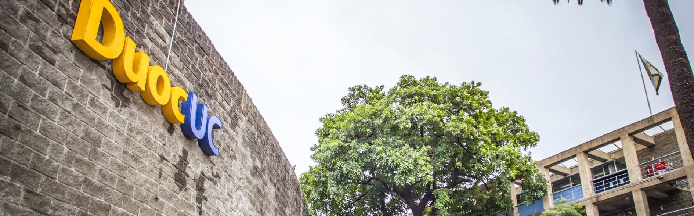

<ion-header [translucent]="true">
  <ion-toolbar>
   
   <ion-icon [routerLink] = "['/login']" name="close-outline" slot="end" size="large" ></ion-icon>
  </ion-toolbar>
</ion-header>

<ion-content >

  <div class="box-1" >
    <div class="box-saludo">
      <p class="saludo">Bienvenido {{usuario.name}}</p>
      
      <p class="saludo">Duoc UC Viña</p>
    </div>
  </div>


  <ion-grid class="box-2">
    <ion-row>
      <ion-col class="opcion-menu"  >
        <ion-tab-button [routerLink] =  "['/home/asistencia']">
          
          <p class="opcion-menu-text">Asistencia</p>
        </ion-tab-button>

      </ion-col>

      <ion-col *ngIf="usuario.categoria === 'Profesor' " class="opcion-menu" >
        <ion-tab-button [routerLink] =  "['/home/ramo']">
          
          <p class="opcion-menu-text">Ramos</p>
        </ion-tab-button>
      </ion-col>
    </ion-row>

    <ion-row *ngIf="usuario.categoria === 'Profesor' ">
      <ion-col class="opcion-menu">
      <ion-tab-button [routerLink] = "['/home/crear-ramo']">
        
        <p class="opcion-menu-text">Generar ramo</p>
      </ion-tab-button>
      </ion-col>
    </ion-row>


  </ion-grid>

  <!-- barra navegacions -->
    <ion-tabs>
      <ion-tab-bar >
        <ion-tab-button [routerLink] = "['/user']" >
          <ion-icon name="person"></ion-icon>
          Usuario
        </ion-tab-button>

        <ion-tab-button >
          <ion-icon name="home"></ion-icon>
          Home
        </ion-tab-button>

        <ion-tab-button [routerLink] = "['/qr']">
          <ion-icon name="qr-code"></ion-icon>
          Codigo QR
        </ion-tab-button>
      </ion-tab-bar>
    </ion-tabs>

</ion-content>
